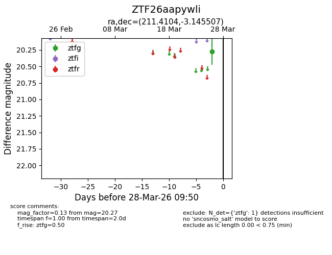
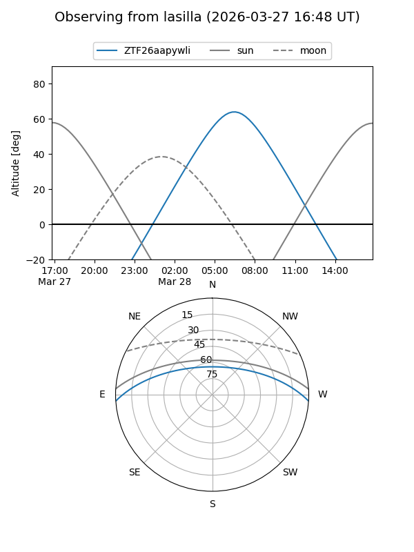
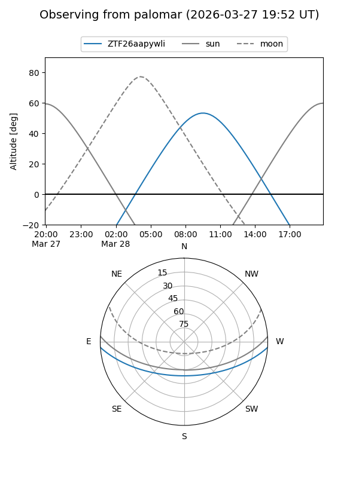

ZTF26aapywli
Target ZTF26aapywli at 2026-03-28 09:53
Aliases and brokers:
FINK: link
Lasair: link
ALeRCE: link
alt names
ZTF26aapywli (ztf,fink_ztf)
Coordinates:
equatorial (ra, dec) = 211.4104,-3.14551
equatorial (HMS+DMS) = 14:05:38.51,-03:08:43.82
galactic (l, b) = (336.4028,+54.83067)
Flags:
Photometry:
last ztfg=20.27
1 ztfg detections
Lightcurve

Visibility


Additional plots